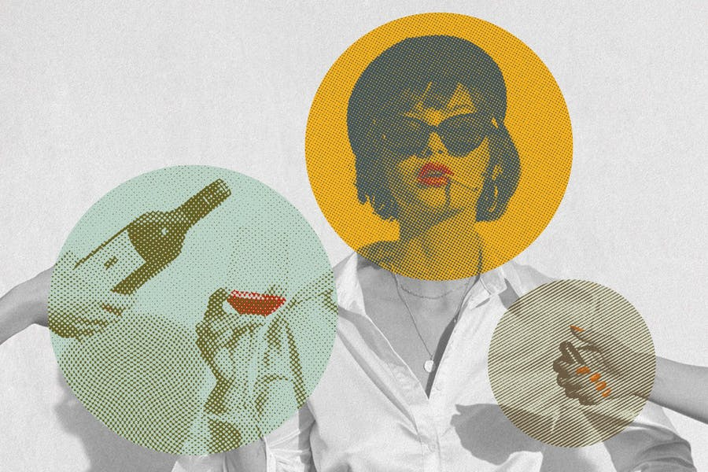
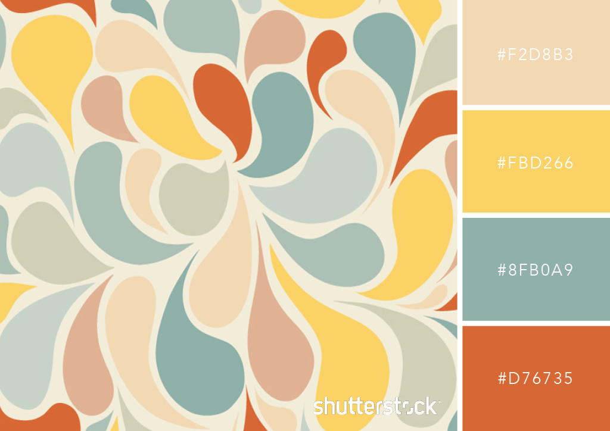

1960's Color Palette
The 60s included bright colors along with pop art and psychedelic designs.

This era was a huge turning point for graphic design and was more into creative, bright and experiemental styles.
I am heading 1
